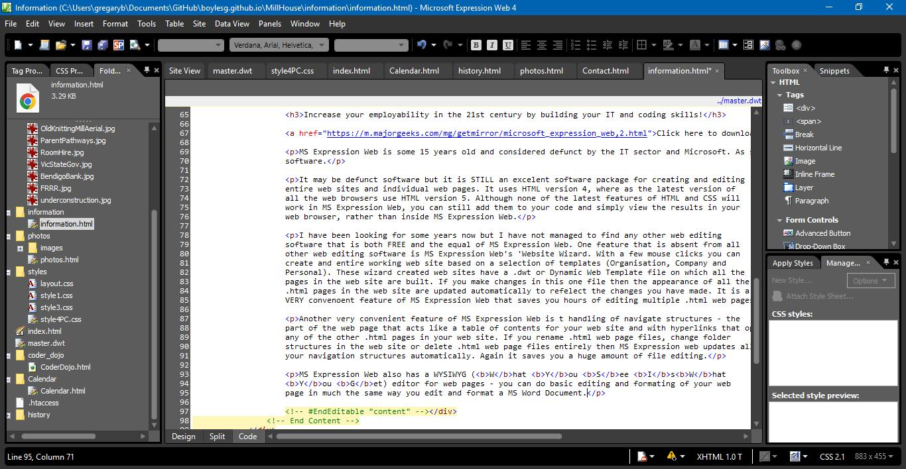
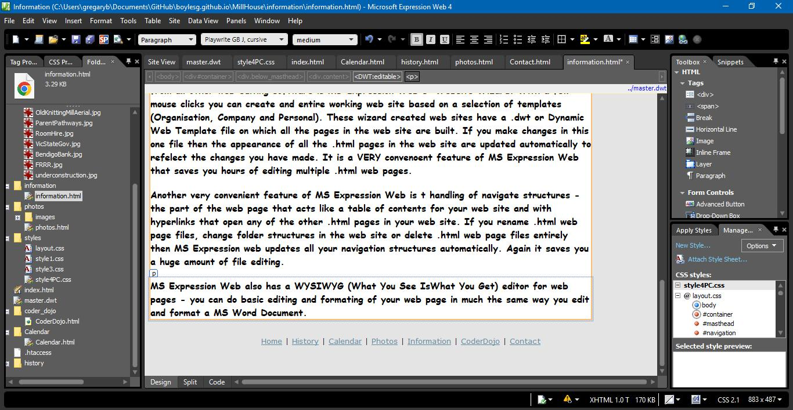

MS Expression Web (by Greg)
Increase your employability in the 21st century by building your IT and coding skills!
Click here to download it.MS Expression Web is some 15 years old and considered defunct by the IT sector and Microsoft. As such it is FREE software.
It may be defunct software but it is STILL an excelent software package for creating and editing entire web sites and individual web pages. It uses HTML version 4, where as the latest version of all the web browsers use HTML version 5. Although none of the latest features of HTML and CSS will work in MS Expression Web, you can still add them to your code and simply view the results in your web browser, rather than inside MS Expression Web.
I have been looking for some years now but I have not managed to find any other web editing software that is both FREE and the equal of MS Expression Web. One feature that is absent from all other web editing software is MS Expression Web's 'Website Wizard. With a few mouse clicks you can create and entire working web site based on a selection of templates (Organisation, Company and Personal). These wizard created web sites have a .dwt or Dynamic Web Template file on which all the pages in the web site are built. If you make changes in this one file then the appearance of all the .html pages in the web site are updated automatically to refelect the changes you have made. It is a VERY convenoent feature of MS Expression Web that saves you hours of editing multiple .html web pages.
Another very convenient feature of MS Expression Web is t handling of navigate structures - the part of the web page that acts like a table of contents for your web site and with hyperlinks that open any of the other .html pages in your web site. If you rename .html web page files, change folder structures in the web site or delete .html web page files entirely then MS Expression web updates all your navigation structures automatically. Again it saves you a huge amount of file editing.
MS Expression Web also has a WYSIWYG (What You See Is What
You Get) editor for web pages - you can do
basic editing and formating of your web page in much the same way you edit and format a MS Word
Document.
 